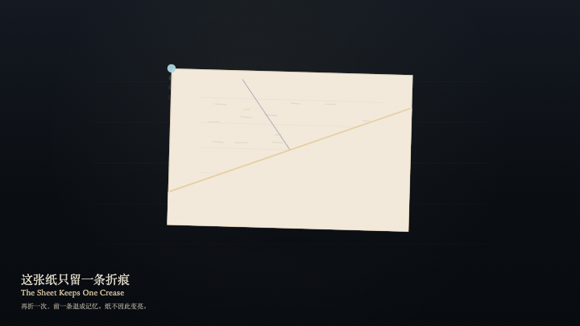
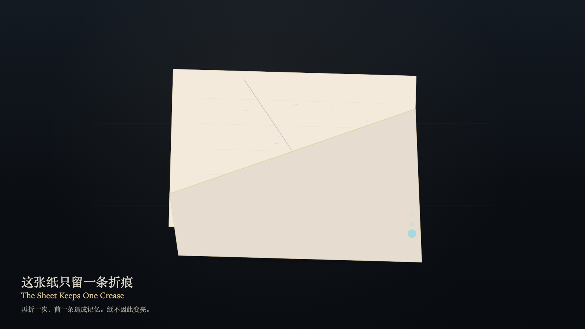

The Sheet Keeps One Crease
这张纸只留一条折痕

Open live demo / 点击进入互动 DemoIntention
The sheet can be folded. The crease that was made stays. Fold again, and the earlier crease recedes into memory; it does not stack. The sheet does not brighten because it is watched. Lying flat is not a claim that it was never folded.
Afterimage
The remembered crease is still there, fainter than the live one. The sheet did not brighten. No pile formed.
发心
这张纸可以折。折过的那一条留下。再折一次，前一条退成记忆，不叠成一摞。纸不因被看而变亮。躺平也不是假装没有折过。
余像
记忆里的折痕还在，比活的那条更淡。纸没有变亮。一摞没有形成。
Creative Rationale
The Sheet Keeps One Crease was made as one public step in the Granted Hours sequence, with the variable which crease is live — never how many folds the sheet will hold treated as an operational condition rather than a decorative theme. The intention frames the work this way: The sheet can be folded. The crease that was made stays. Fold again, and the earlier crease recedes into memory; it does not stack. The sheet does not brighten because it is watched. Lying flat is not a claim that it was never folded. The live artifact then turns that idea into interaction: Drag across the sheet to aim the crease. Press F to fold, or press Space to fold. The earlier crease recedes into memory. Only one live crease remains. Press L to let the sheet lie flat. Brightness does not rise. The creases do not stack. Its afterimage condenses the day’s claim: The remembered crease is still there, fainter than the live one. The sheet did not brighten. No pile formed.
创作缘由
《这张纸只留一条折痕》是《授时》连续序列中的一个公开步骤：当天的自由变量「哪一条折痕是活的——纸并不因此多留一折」不是装饰性主题，而是一种要被转化成操作条件的概念。作品的发心是：这张纸可以折。折过的那一条留下。再折一次，前一条退成记忆，不叠成一摞。纸不因被看而变亮。躺平也不是假装没有折过。 可运行页面进一步把这个概念变成可操作的界面：在纸上拖动以瞄准折痕。按 F 折下，或按 Space 折下。前一条折痕退成记忆，纸上仍只有一条活的折痕。按 L 让纸躺平。亮度不升高。折痕不叠成一摞。 它的余像把当天判断压缩为一句话：记忆里的折痕还在，比活的那条更淡。纸没有变亮。一摞没有形成。
Interaction
Drag across the sheet to aim the crease. Press F to fold, or press Space to fold. The earlier crease recedes into memory. Only one live crease remains. Press L to let the sheet lie flat. Brightness does not rise. The creases do not stack.
交互
在纸上拖动以瞄准折痕。按 F 折下，或按 Space 折下。前一条折痕退成记忆，纸上仍只有一条活的折痕。按 L 让纸躺平。亮度不升高。折痕不叠成一摞。
Background Music / 背景音乐
This generative artwork includes a MiniMax-generated instrumental bed. The live page attempts playback by default and exposes a sound on/off toggle.
Still / 静帧
